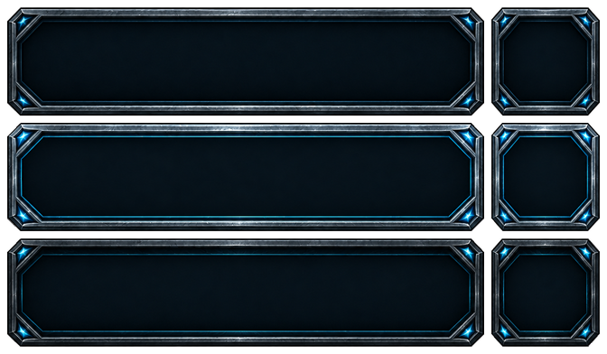

IdleWorlds · Secondary controls
Small frames. Full character.
Hover, focus, or hold any control to try the transitions. Each theme has its own six-sprite atlas.
Navigation
Toolkit
Inventory
1 / 48
Loadouts, zone controls & chat
ZONE 17
View the separate atlas

Top: idle · Middle: hover · Bottom: pressed. Transparent canvas, identical state bounds.
Download this theme’s atlas